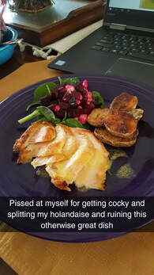
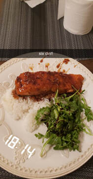
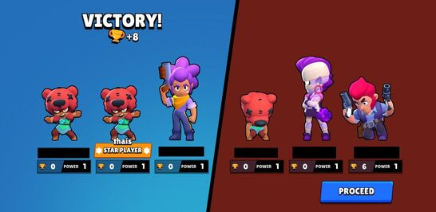

I have a few other interests besides tarot, here are a few of them, ranked by how much I do them.
- Cooking  
- Playing Brawl Stars

If you've never played Brawl Stars before, here's a quick clip of how gameplay works.
- I also have a youtube channel where I smoke and sometimes do readings, check out this reading I did for the 2020 New Year.